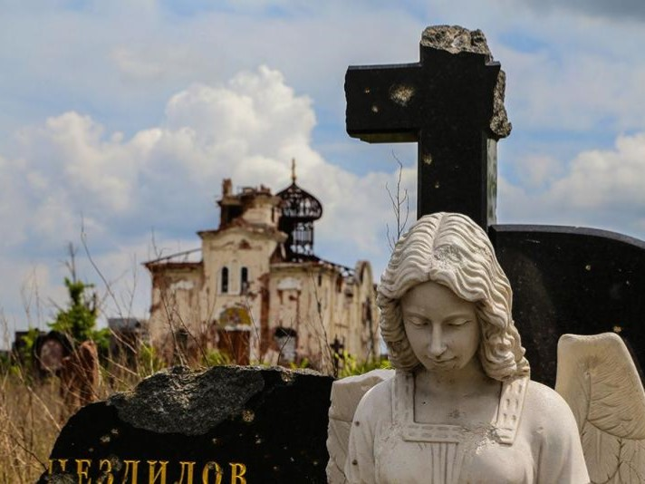

Depuis bientôt trois ans que je vais régulièrement dans cette région en guerre apporter avec mes amis un maigre secours aux enfants du Donbass victimes de la guerre de conquête de l’OTAN, j’observe une société en profonde mutation, arc-boutée sur la volonté inébranlable de ne pas céder un pouce de terrain face aux hommes de la junte de Kiev et résistant victorieusement à tous les assauts tel un fameux village gaulois encerclé par les séides d’un nouvel empire marchand.
De mai 2015 lors de ma première visite jusqu’à la dernière en août 2017, j’ai vu la république de Donetsk restaurer ses routes, relever ses ruines, remplacer les milliers de vitrines brisées et changer les conduites d’eau ou de gaz perforées par les bombes et offrir aujourd’hui le spectacle d’une capitale pimpante, fleurie et avenante où il ferait bon vivre si l’on n’entendait tous les jours tomber les obus sur la ligne de front située à moins de 4 km du centre-ville et si l’on ne voyait la mort faucher presque chaque jour son tribut macabre de civils ou de miliciens.
J’ai vu des femmes engagées dans les forces spéciales dépenser le temps précieux de leurs permissions pour nous accompagner dans des maraudes près de la ligne de front pour apporter de la nourriture et des douceurs aux babouchkas et aux enfants qui vivent dans des maisons délabrées ou dans des bunkers souterrains datant de la guerre froide.
J’ai vu des volontaires venus de Russie, des deux Amériques, de France, de Serbie, d’Arménie, de Géorgie, d’Allemagne ou d’Italie et d’autres parties du monde encore pour offrir leur vie dans cet affrontement total qui oppose deux conceptions du monde parfaitement antagonistes et irréductibles l’une à l’autre et que l’on peut résumer dans la lutte éternelle entre Carthage et Rome, entre les puissances de la mer et celles de la terre, et au-delà entre le monde fluide de l’argent et le monde où les choses qui sont sacrées ne s’achètent pas.
Je suis en train d’achever la lecture du livre en hommage au Donbass de Zakhar Prilépine, cet auteur russe, célèbre dans son pays, et que j’ai eu le plaisir de rencontrer au salon du livre russe à Paris en février dernier. Nous avons d’ailleurs convenu de réaliser ensemble une mission humanitaire à Donetsk ces prochaines semaines.
La lecture de ce livre que je vous recommande chaudement pour comprendre comment et pourquoi cette rébellion du Donbass contre Kiev et ses donneurs d’ordres occidentaux a pris chair, donne un éclairage particulièrement intéressant à tout ce que j’ai pu observer moi-même sur le terrain depuis bientôt trois ans.
Ce qui ressort de manière très claire de cet ouvrage étonnant, et fort bien écrit par ailleurs, est que cette sédition a été réalisée par des hommes qui n’avaient aucun intérêt matériel à la faire et qui au contraire avaient tout à perdre, et d’abord leur vie, en refusant les ukases de Kiev. L’entrée en rébellion n’a pas été faite, ou suscitée, par les oligarques du Donbass, bien au contraire, ces derniers ont tout fait pour la saboter et ils étaient prêts à s’entendre avec leurs homologues de Kiev ou de Kharkov pour sauvegarder leurs intérêts et leurs rentes. Non, cette révolution a été faite par des insurgés venus du peuple, mineurs et paysans, encadrés par des gens de la classe moyenne – Alexandre Zakharchenko, le Président de la République Populaire de Donetsk était électromécanicien avant le début de la guerre - alors que les bourgeois de Donetsk, hauts fonctionnaires et dirigeants d’entreprise, ont quitté le Donbass pour Kiev ou la Russie dès les premiers coups de feu pour sauver leur peau et leurs comptes en banques, bien convaincus que sans eux, personne ne serait capable à Donetsk et à Lugansk de remettre l’économie et l’administration en marche.
Avec mes amis Erwan Castel et Sebastien Hairon, volontaires français dans le Donbass depuis 2015. Ils risquent leur peau tous les jours dans les tranchées face aux Ukrainiens manipulés par l'occident. Très fier d'avoir levé mon verre avec eux. Respect.
Et c’est là que le miracle s’accomplit, car les rebelles du Donbass, confrontés à une guerre d’agression très violente entre 2014 et 2015 puis à une guerre d’usure et à un blocus sans faille depuis lors, ont non seulement réussi à stopper les assauts des troupes de Kiev et de leurs alliés de l’OTAN, mais ils ont surtout réussi à remettre sur pied des circuits commerciaux, des usines fermées depuis des lustres ou détruites pendant la guerre, des administrations indispensables à la vie quotidienne (hôpitaux et santé, services des eaux, du gaz, de l’électricité, des transports, de l’entretien des routes, des écoles, des universités…).
Tout cela fonctionne mais, et c’est cela qui est véritablement révolutionnaire, pas sur des principes libéraux et pas non plus sur des principes socialistes, même si un grand nombre d’entreprises ou de commerces abandonnés par les oligarques ont été nationalisés. Le Donbass est en train de montrer au monde que le profit n’est pas le destin d’un peuple et qu’une société, même en guerre, peut s’épanouir sans lutte des classes, dès lors que les prévaricateurs et les banquiers sont hors du jeu.
Dans le livre de Zakhar Prilépine, ce dernier qui se décrierait volontiers comme un patriote socialiste, relate ses nombreuses rencontres avec le Président Zakharchenko, qui se verrait lui plutôt comme un monarchiste, ce qui intrigue manifestement Prilépine qui ne s’attendait pas à cette réponse et ce qui est extraordinaire c’est que cette mayonnaise improbable est en train de prendre sur ces terres noires du Donbass. À Donetsk aujourd’hui, un président de la république nostalgique du temps des tsars est aux côtés d’un patriote socialiste qui a fleureté avec le national-bolchevisme et ils luttent tous deux contre un Système qui a érigé l’argent en valeur suprême. Le point nodal de leur combat est la recherche du bien commun pour les populations slaves du Donbass et non pas la recherche des privilèges ou des avantages pour quelques-uns, que ce soient des boyards ou une nomenklatura quelconque.
Plus précisément encore, et le livre de Prilépine le montre très bien, se dessine dans le Donbass une nouvelle philosophie politique où la solidarité prime sur l’égoïsme. La puissance régalienne qu’incarne Alexandre Zakharchenko est en mesure de rétablir les équilibres et de réparer les injustices : un exemple parmi des dizaines : des conseillers lui ayant fait remarquer que les prix du marché central de Donetsk avaient tendance à s’envoler, Zakharchenko est allé voir le directeur et lui a demandé de faire baisser les prix. Devant le refus de ce dernier, il lui a alors annoncé qu’il était muté sur un autre poste, et le lendemain, le directeur s’est retrouvé en première ligne sur le front et revêtu de l’uniforme ad hoc pour méditer sur les dangers de s’opposer à l’autorité régalienne lorsque celle-ci veut protéger les intérêts du peuple. La « punition » devait durer trois mois, mais comme le directeur était père de famille nombreuse, grâce à la magnanimité du Président, elle fut ramenée à un mois. Quoi qu’il en soit, dès le lendemain, les prix sur le marché avaient baissé de manière substantielle, et tous les autres marchés de la capitale s’étaient alignés.
Mais alors me direz-vous, le solidarisme, qu’est-ce que c’est ? Eh bien c’est cela ! L’exact contraire de l’atomisation des individus que l’on observe dans toutes les sociétés occidentales afin de les laisser sans défense contre la « main invisible » du marché. Tout est fait dans le Donbass pour protéger une communauté, un peuple –sans considération raciale-, sans chercher à privilégier une catégorie plutôt qu’une autre. À la différence de la Révolution française qui fut une révolution bourgeoise qui mit les boutiquiers au pouvoir à la place de l’aristocratie, la révolution du Donbass est une authentique révolution populaire qui s’est débarrassée de ses oligarques et qui est en train, sous nos yeux, de créer un modèle pour le monde de demain. J’y suis d’ailleurs à nouveau invité en mai prochain pour assister au 4ème anniversaire de l’indépendance de la République de Donetsk et j’irai avec plaisir saluer son Président et le féliciter pour le travail accompli.
Il serait temps que les partisans sincères de l’Euromaïdan, ceux qui ont cru mettre un terme à la corruption en Ukraine, ouvrent les yeux pour se demander s’ils ne se sont pas trompés de camp et cessent enfin cette guerre voulue par les Anglo-Saxons contre leurs frères slaves du Donbass.

Partager cette page